FetUre V14 — контекст до действия
V14 — копия V13. Новых функций в ней почти нет: она делает понятнее те, что уже есть. Прежде чем что-то нажать, человек видит три вещи: от чьего имени он действует, кто это увидит и что произойдёт потом. Инструменты появляются там, где нужны. В профиле сначала человек, а не шкалы.
V13 сохранена без изменений: public/prototype-v13.html. Журнал изменений — docs/design-reference/V14-CHANGELOG.md. Отчёт V13 использован как материал для разбора, а не как готовое ТЗ: каждое решение ниже сверено с собственным проходом V13 в браузере.
Что меняется и зачем
1. Автор «Я / Мы» — словами, рядом с действием
В V13 автор показан только аватаром 40–48 px: смысл переключателя приходилось угадывать. В V14 это подписанная кнопка: «Опубликовать как · Я · alex_b», «От имени · Мы · Alex и Kira». Она стоит в композере над текстом, в профиле над кнопками и в подборке. В шапках и полях ответа она короче («Я» / «Мы»). Последнее действие повторяет автора: «Опубликовать от пары». Без активной пары переключателя нет вовсе: у человека один автор. Смена автора по-прежнему сохраняет экран, черновик, карточку и прокрутку — это проверено кликами.
2. Публикация: сначала мысль
Над текстом — автор и аудитория, под ними одна фраза о последствиях: «Видно в ленте и в твоём профиле. От пары — сначала подтвердит Kira». Панель оформления появляется, только когда пишешь, и стоит под текстом, чтобы строка не прыгала. Вложения собраны в одну компактную строку: фото, опрос, заметка, упоминание, «Мои интересы». Темы больше не занимают стену из 75 значений: видны 4 и «Все». Раньше слово «интересы» значило две разные вещи, теперь это «Темы публикации» и «Мои интересы».
3. Профиль: человек раньше фото
Обложка стала ниже: 5:4 вместо 4:5, на весь экран фото открывается по нажатию. Сразу под ней — что человек пишет о себе и где вы пересекаетесь: какое сообщество ведёт, в каких сообществах вы вместе, какую встречу проводит. Блок совместимости теперь одна строка: «Есть темы для разговора · 2 общих интереса… Совпадение — не согласие». Подробное сравнение — на шаг глубже. Обложка пары без фото стала компактной, аватары больше не наезжают на имя.
4. Сообщество → обсуждение → встреча
Под описанием сообщества — ближайшая встреча. Вкладки называются полностью («Обсуждения» больше не обрезается) и прокручиваются на узких экранах. В обсуждениях видна последняя реплика. В каталоге и боковой колонке, кроме размера, видны признаки жизни: «обсуждали 5 ч назад · встреча 26 окт». На десктопе у названий событий две строки вместо одной обрезанной.
5. Фильтры: главное сверху, словарь по запросу
Сначала идут «Где искать», «Кого показывать» и «Возраст». Гендер, ориентация, формат, цели, роли и интересы стали строками с кратким итогом выбора («не важно» или «би, пан и ещё 1»). Весь словарь с поиском открывается внутри. Внизу — сводка включённых фильтров и кнопка «Показать · 5». Если никого нет, экран говорит, какой фильтр сужает сильнее всего и сколько людей нашлось бы без него.
6. Совместимость словами, без ложной точности
Вместо строки-кода «2 совпадения, дополняете в 2, обсудить 2» — заголовок «Темы для разговора». Каждая группа объяснена одной фразой, а у каждой темы есть пояснение. Отдельная плашка напоминает: совпадение интересов — не согласие, и каждый может передумать. Объяснено и значение чисел (1–10, собственная оценка). Единого процента по-прежнему нет.
7. Доступ: одна понятная сводка
В окнах «Открыть доступ» и «Доступ для…» появилась сводка: «Kai увидит описание, фото до 30 окт. Видео останется закрытым. Чат и симпатию это не открывает. Отозвать можно в любой момент; уже увиденное вне FetUre вернуть нельзя». Кнопка называет срок: «Открыть на 7 дней». В изменении доступа есть «Отозвать полностью». Если снять все области, кнопка становится «Отозвать доступ» и просит подтверждения.
8. Согласие на отметку — глядя на фото
Разрешить отметку теперь можно только из окна, где видны само фото, текст поста, итоговая аудитория и последствия. «Против» по-прежнему работает в один шаг: отказу контекст не нужен.
9. Мелочи, которые мешали
- Исчезнувшие медиа в чате сжаты до одной строки: в разговоре снова видна последовательность.
- Первый экран обещает социальную сеть: «Свой круг. Свои границы.» Слайд о сообществах и встречах теперь первый, карта интересов углубляет профиль, а не служит входом.
- На экране Premium теперь написано, что бесплатно для всех, сколько и когда спишут и что остаётся после отмены.
- Исправлена ошибка V13: в EN заголовки групп совместимости и «даю · получаю» оставались русскими.
Что сохранено без изменений
Пять разделов и навигация; лента, заметки, «Популярное»; центр доступов и раздел «Нужно решить»; личные аккаунты в паре и согласования; события с заявкой и адресом после одобрения; ленту на десктопе с афишей; все правила согласия: совместимость не даёт права на чат, приватный доступ не открывает переписку, участие в событиях личное. Регрессионный контракт V13 целиком проходит на V14.
Что я рассмотрел и отверг
| Идея | Почему нет |
|---|---|
| Спрятать все вложения за одну кнопку «Добавить» (макет отчёта) | Фото — самое частое вложение, лишний шаг стоит дороже, чем строка из пяти кнопок. Скрыта только панель оформления, нужная реже всего. |
| Отдельные шаблоны «социальный профиль / профиль знакомств» | Два расходящихся шаблона усложняют поддержку и запутывают. Один порядок — человек, контекст, действие — подходит обоим; подборка знакомств остаётся с большим фото. |
| Отдельная плашка «Действовать: Я» на профиле (макет) | Подпись без действия рядом опять отрывает автора от кнопки. Автор встроен прямо над кнопками и говорит, что именно делается. |
| Подтверждение автора перед каждым действием | Привыкание к диалогам и лишний шаг в частом сценарии. Видимая подпись и автор в CTA решают ту же задачу без трения. |
| Единый процент совместимости | Ложная точность и риск прочитать совпадение как готовность к действию. |
| Декоративные обложки, размеры и тексты из AI-макетов | Это иллюстрации идей, а не дизайн. Взята только иерархия; визуальная система V9–V13 сохранена. |
| Сменить модель Premium на пакеты организатора | Это продуктовое решение, требующее исследования спроса. В V14 только честнее описано текущее предложение. |
| Свернуть «Участники» и «Правила» сообщества в меню | Это путь к нормам среды, важный для доверия. Вкладки сохранены, им просто дано место. |
Реальные скриншоты V14
Ниже — снимки работающего прототипа в Chromium, а не макеты.
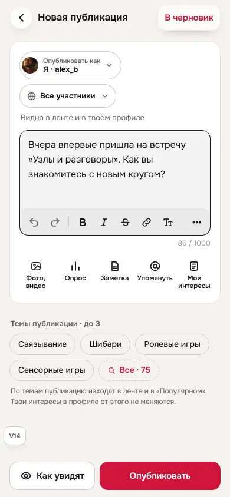
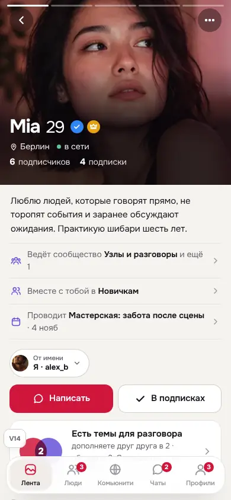
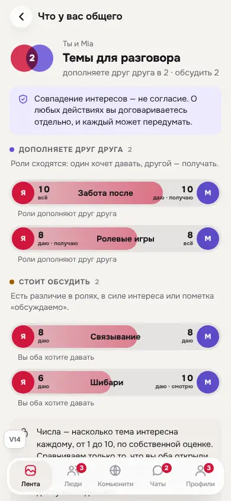
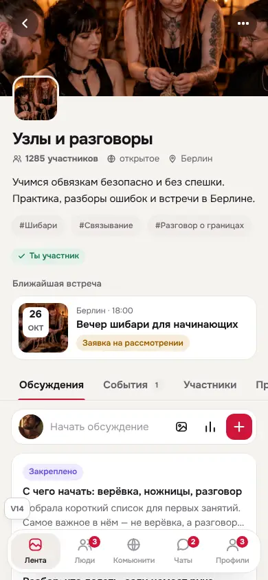
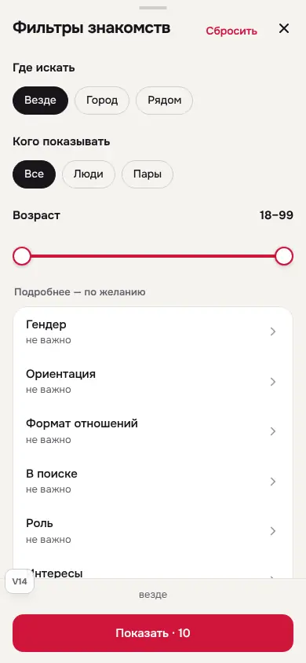
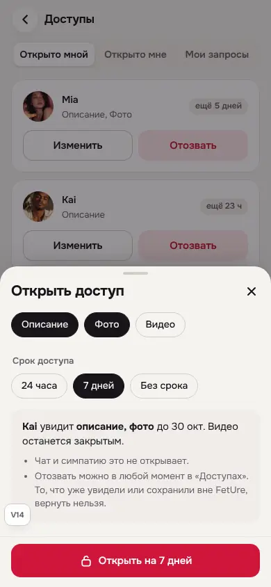
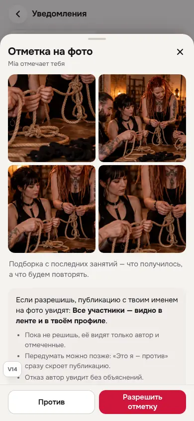
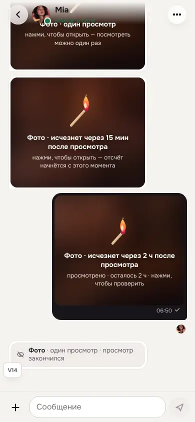
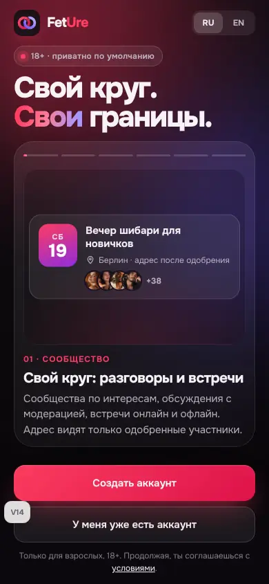
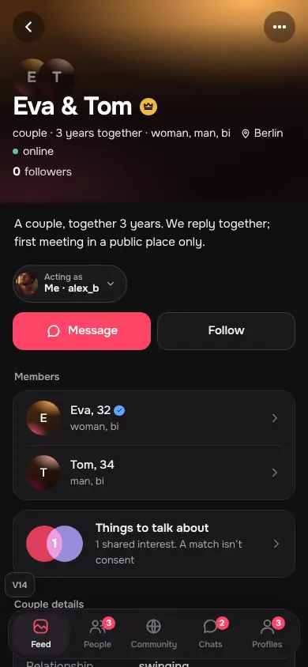
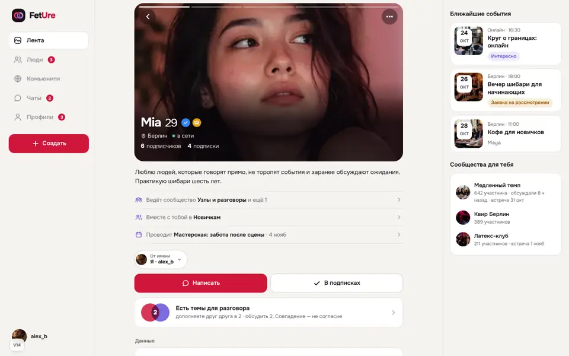
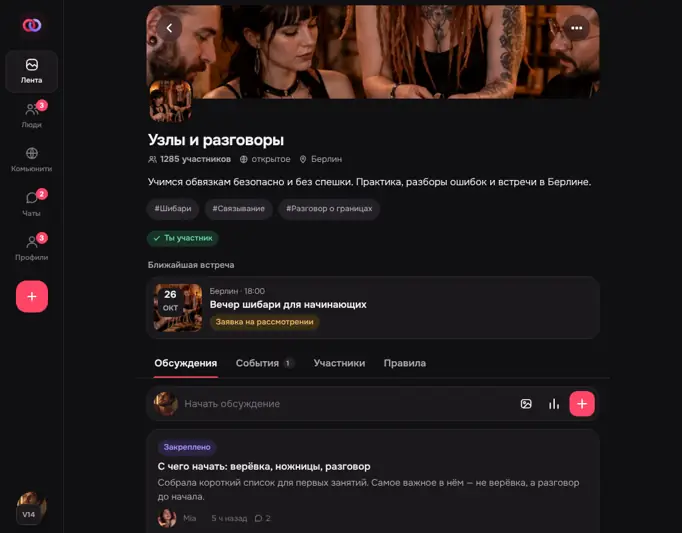
Как проверено
- Браузерная матрица Chromium: 17 экранов × 320/390/768/1024/1440 × светлая/тёмная × RU/EN — 340 состояний без ошибок JS и без горизонтального переполнения страницы. Длинные строки (
?long=1) и враждебный ввод (?hostile=1) на 320/390/1440: без ошибок. - Все 600 переходов QA-панели (личный аккаунт, пара, новый аккаунт × RU/EN) открывают экран без ошибок и пустых состояний.
- 22 сценария настоящими кликами: смена автора в композере не теряет текст, в профиле — прокрутку; фильтры (раскрытие, выбор, итог, применение); просмотр и разрешение отметки; выдача доступа со сроком; сужение и отзыв с подтверждением; сообщество → встреча → назад; вкладки; чат.
- Автоматически: контракт V13 целиком на V14 + проверки V14 (
tests/prototype-v14-contract.mjs).
Не проверено
- Реальные устройства, экранные дикторы, масштаб 200% и полный аудит WCAG. Целевые размеры и подписи проверены в коде и на скриншотах, но это не аудит.
- Работа с несколькими живыми клиентами пары. Это прототип: данные вымышленные и живут до перезагрузки.
- Пользовательские тесты. Эффект решений — гипотеза для проверки на людях, как и предлагает отчёт.